Axis
Begin with the Forbidden City. Read the city through gates, courtyards and the north-south line.

Beijing is not read in one direction. It opens through courtyards, rooflines, gates, tree-lined lanes and long views that keep changing the scale of the city.
Start with the axis. From the Palace Museum to Jingshan, the city reveals an older idea of order: gates frame gates, courtyards lead to larger courtyards, and the roofline becomes a quiet horizon. The experience is architectural, but never only architectural. People, weather and the changing light keep the composition alive.
Then move sideways. Beijing becomes more intimate in its hutongs, more open around the old lakes, and more dramatic once the city gives way to the ridges of the Great Wall.
The Forbidden City is most powerful when seen as a sequence rather than a single landmark.
Its scale can feel overwhelming, so allow the details to slow you down: painted beams, glazed tiles, worn stone steps and the shadow cast by a gate. The axis gives the complex its order; the small variations give it its atmosphere.
Beijing at night is not only about lights. It is about the quiet return of shape, shadow and distance.
At the edge of the historic centre, the city becomes less monumental and more atmospheric. Walls absorb the last light, rooflines become graphic, and the old city appears as a sequence of rooms rather than a single object.
At Mutianyu, the wall is not a line drawn across the landscape. It is a moving edge between architecture and terrain.
The wall is best understood slowly. Watch how watchtowers mark the ridge, how the path rises and falls, and how the material changes with the weather. Leave room for the landscape to be the subject — the architecture is already doing enough.
The Temple of Heaven brings another kind of order to Beijing: circular architecture, measured proportion and a strong relationship with open space.
Come for the architecture, but stay for the park. The complex is also a place of movement and rhythm: old cypress trees, long paths, voices carried across open courtyards, and a roof that seems to gather the sky above it.
Beijing becomes most human at the scale of a doorway, a bicycle, a tree in a courtyard or a street that bends out of sight.
A city is also a sequence of smaller distances.
A hutong is not simply an old street. It is a way of arranging daily life around shared thresholds and small distances. The lane makes room for ordinary gestures: a door left open, a bicycle leaning into the shade, a tree holding the centre of a courtyard. This is where Beijing becomes less like a monument and more like a lived rhythm.
Walk without trying to complete the neighbourhood. The best moments often sit between the places you planned to see.
The most rewarding Beijing itinerary moves from the monumental to the intimate, then back out into the landscape.
Begin with the Forbidden City. Read the city through gates, courtyards and the north-south line.
Turn into a hutong. Look for thresholds, textures, shade and the pace of ordinary life.
Visit the Temple of Heaven for its geometry, then let the surrounding park slow the day down.
End at Mutianyu. The city becomes distant, and the wall turns history into a landscape.
Do not try to finish Beijing in one visit. Build a first reading, then leave a reason to return.
Images in this page come from Wikimedia Commons and Unsplash. Revisit each source page before publishing or using images commercially, and confirm the current licence and attribution requirements.